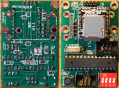
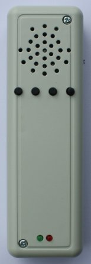

Krümelbahn
KrümelbahnAVR-Sound
AVR-Sound DFPlayer ist der Versuch, kostengünstig und einfach MP3-Sounds auf der Modellbahnanlage abzuspielen.
Nachdem kommerzielle Geräte sehr teuer sind, blieb nur der Selbstbau - zudem so auch eigene Anforderungen umgesetzt werden konnten:
- in meinem Stellwerk verwendbar
- an meiner Kanalbrücke verwendbar
- für meine Feuerwehr verwendbar
- über LocoNET® ansteuerbar
- erweiterungsfähig - bei neuen Ideen und Anforderungen
Auf Basis des AVR-Sound DFPlayer gibt es jetzt auch eine Version als Sound-FRED:
- mit einer neuen Platine passend für das FRED-Gehäuse
- bis zu vier verschiedene Sounds (auf Micro-SD-Karte gespeichert)
- mit LiPo-Akku, ladbar über den integrierten USB-Micro-Stecker


